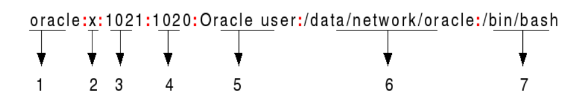

Methods
There are a few different methods for cracking a password hash:
- Brute force attack - not the most efficient approach
- Dictionary attack - tries likely words, short passwords, dictionary lookup. Is likely to have a good chance of success on many systems.
- Look-up tables - precomputes the hash values of a large number of passwords.
- Reverse Look-up tables - uses hash chains to reduce the storage space
- Rainbow tables - an improvement on look-up tables as it reduces chain collisions
We will go through each method
Brute Force and Dictionary Attacks
The simplest way to crack a hash, here are the steps/outline:
- Guess password
- Hash the guess
- Check if the guess’ hash equals the given hash
- If the hashes are equal, the guess is the password.
- If not go back to step 1.
As you can tell this is the slowest method but easiest to implement.
Brute Force Attacks
- try every possible combination of characters
- very computationally expensive, the least efficient
- will eventually find the password after a long time (longer if passwords are more complex and longer)
Dictionary attacks
- Uses a file containing words, phrases, common passwords, and other string that are likely to be used as a password
- Theses dictionary files are constructed by extracting words from large bodies of text, and even from real databases of passwords.
- Further processing is often applied to dictionary files, such as replacing words with their “leet speak: equivalents (hello = h3110)
Lookup Tables
In Brute force/dictionary cracking a password is hashed every single time before being guessed.
What look-up tables do is that it pre-computes the hashes of the passwords, store the hashes and the corresponding passwords in a look-up table.
When given a hash, it looks up the table for the matching password - basically dictionary but precomputes hashes. More efficient.
Reverse Lookup Tables
Problem with Dictionary Attack and Lookup Tables
- Stores all password possibilities in a large database
- Not efficient for long passwords (too much storage)
What Reverse Lookup Tables do
- sacrifice time for storage
- works better for long passwords
Does this using a technique called hash chain.
Hash Chain
Firstly, we have to define a reduction function, R, that maps hash values back into a password, not the original password (it isn’t an inverse of the hash function) but just some other password that fits a certain criteria.
This criteria is that the password must belong to a domain in P where it is the set of all combinations of length L characters in a character set W. Example, if we want to crack all passwords of length 5, consisting of the characters from the character set [ABC…XYZ0123456789], then P is the set of all combinations of 5 characters from this character set.
The only requirement for reduction function is to return a value in P, other than that it can be anything.
Let’s say our starting password is “random”. We hash it with the hash function that we are targeting, so MD5, SHA256, etc., then we reduce the hash with R. We do this as many times as we want (this is usually a calculated amount based on how long we expect/want to spend).
Hash: "random" -> "7ddf32e17a6ac5ce04a8ecbf782ca509"
R: "7ddf32e17a6ac5ce04a8ecbf782ca509" -> "ienw3"
Hash: "ienw3" -> "b9322e367ad002d5adf7ca60b8b61e86"
... (1000 times) ...
Hash: "o1gti" -> "27aa4cbd3653a4617e0aec76ba3af9a4"
How RLT saves space
Many passwords and hashes are generated in the hash chain, but because we have the R function and H function we only store the start and end passwords (lecture notes). Some sources online say that the start password and the end hash is stored.
To use this table, lets say we have an input hash taken from a compromised user password database “b9322e367ad002d5adf7ca60b8b61e86”. If we stored the end hash, then what we can do is to first check if this password exists in the table – meaning we are extra lucky and we save loads of time.
Otherwise, if it doesn’t exist or we use the system of storing end passwords (because the probability of finding the end hash immediately is very low) we do the following
- Apply the R function on hashes and H function on passwords.
- Check if the resultant password/hash (depending on which system you use) exists in the table.
- Repeat from step 1 until a set limit N (i.e 1000) or until we find a match.
If at any point we observe a match:
- We can get the corresponding start password (from the look-up table) and use it to recreate the chain
- There is a good chance that the chain will contain the given hash h
- If so, the password immediately preceding h in the chain is the matching password
False Alarms
The reduction function we have defined does not represent a 1 to 1 relation between the hash and the password – 2 different hashes when going through the (R) may give the same output.
This is the main problem with RLT – hash chain collisions that we call false alarms.
Example. Both following chains contains p2; all info after p2 in both chains will be the same
Chain 1: \(p1-> h1 -> p2 -> h2 -> p3 -> h3 -> p4\)
Chain 2: \(p’1 -> h’1 -> p’2 -> h’2 -> p2 -> h2 -> p3\)
Chain collision wastes space for the attacker
- this is because after a certain $p_n$all following passwords in both chains will be the same
- if this chain was in the 10,000, a majority will be the same (wastes space!)
Rainbow Table
Rainbow tables are designed to reduce chain collisions or false alarms. It does this by using different R functions in different reduction stages when generating the hash chain to reduce the probability of chain collisions.
The collision between chain 1 and chain 2 is reduced.
Chain 1: \(p1 -> h1 –(R1)-> p2 -> h2 –(R2)-> p3 -> h3 –(R3)->p4\)
Chain 2: \(p’1 -> h’1 –(R1)-> p’2 -> h’2 –(R2)-> p’’2 –> h’’2 –(R3)-> p’3\)
Cracking passwords in Rainbow Table
Given a hash, $h$, the reduction functions must be applied in the right order when creating the chain.
Lets say we have $k$ reduction functions, anyone of them can be applied first to the given hash.
Assume $R_k$ is first applied to the given hash:
The order of R functions applied is: \(h \;–(R_k)\rightarrow p’1 –(R_1)\rightarrow … –(R_2)\rightarrow, …, –(R_{k-1})\rightarrow …\)
If password not found, means $R_k$ was not the first R function to be applied. Proceed to assume $R_{k−1} $is first applied.
\[R_{k-1}, R_k, R_1, …, R_{k-2}\]If password not found, continue so on and so forth, until finally $R_1 $is first applied:
\[R_1, R_2, R_3, …, R_{k-1}, R_k\]If the password still cannot be found after this, we say that the password of the given hash is not embedded in the rainbow table, and we are not able to find it.
Additional resources on reverse lookup tables and rainbow tables
Defence
There is no way to prevent brute-force or dictionary attacks.
But we can use password salts to make lookup table, reverse lookup and rainbow tables attacks less effective.
Password Salt
A salt is a randomly generated number. The salt and the password are connected and used by the hash function to generate hash: \(h = Hash(password+salt)\) Both h and the corresponding salt are stored in the password file.
Login verification
When a user enters a password during the login
- Obtain the salt value used to generate the hash for the user
- Connect the input password with the salt
- Generate the hash of this input and compare it with the stored hash.
How does salting help defend against table attacks?
In order for the lookup table attack to succeed, an attacker needs to precompute the tables.
Since salt is used, we precompute and store the hash of a password for each possible salt value, which increases the possible combination of passwords + salts that we have to pre-compute in our lookup tables by a lot.
Additionally because the salt is not user generated it is more unpredictable as well.
For password p, precompute and store: \(Hash(p+salt_1), Hash(p+salt_2),..., Hash(p+salt_n)\)
When the salt is large (e.g. 48bits), the required storage space will be too big for the attack to be worthwhile.
In order to precompute reverse and rainbow tables, an attacker needs to generate many chains for the same password because it has to consider each possible salt.
How are hashes stored in Linux?
TLDR. When a user is created their info is stored in the
/etc/passwdfile and their hash + salt is stored in theetc/shadowfile. Only the user can readpasswdand only root can readshadow.
It is likely that you won’t need the below information for your exam, they were from my notes mainly for the coursework but I thought I’d put it up anyways.
When you create a new user in Linux, Linux creates an entry in the /etc/passwd and the /etc/shadow files:
Entry in /etc/passwd
This file can be read by an user. The entry created in passwd file, it contains a number of fields which are separated by colon (:).

- Username - used when user logs in.
- Meant for storing ha but hash is typically not stored in /etc/passwd, but in the file /etc/shadow. An x character indicates that the hash is stored in
/etc/shadow. - User ID (UID) - UID 0 is reserved for root and UIDs 1-99 are reserved for other predefined accounts. Further UID 100-999 are reserved by system for administrative and system accounts/groups.
- Group ID (GID) - The primary group ID (stored in
/etc/groupfile) - General Info on User - The comment field. It allows you to add extra information about the users such as user’s full name, phone number etc. This field is used by
fingercommand - Home directory - The absolute path to the directory the user will be in when they log in. If this directory does not exist then user’s directory becomes
/ - Command/shell - The absolute path of a command or shell (
/bin/bash). Typically, this is a shell. Please note that it does note have to be a shell. For e.g.,sysadmincan use thenologinshell, which acts as a replacement shell for the user accounts. If shell is set to/sbin/nologinand the user tries to log in to the Linux system directly, the/sbin/nologinshell closes the connection.
Entry in /etc/shadow
Shadow can only be read by root user. This is how the hash looks like:
$6$JVGtK2Il$/s.5q4M1WN/ekw2rM26OHId9TPELOcPMmHG.E7zCzSbalzVPgPPGUIB7f7/2mTfj/Lg3RgoKhAkcsBDkJGAN.1:18554:0:99999:7:::
If the hash is a * - means that the account is disabled.
! or !! means that the account is locked
A blank entry means that a password is not required to log in.
The number between 1st 2 dollar signs represents the hash function used by the OS - here 6 represents SHA512.
The characters between the 2nd and 3rd dollar sign is the salt.
All the subsequent bits up till the colon (:) - is the generated hash for the password
Last part (after the colon)
:18554:0:99999:7:::
- The time the password was generated
- The minimum number of days between authorised password changes. If we set it to be 0, password can be changed immediately. If we set it to 7, we have to use password for 7 days.
- The maximum number of days a password can last for (compulsory to change after the set number of days)
- The number of days in advance the system will give you a warning to change password
Unix password protection
Unix system may set the local rules for setting passwords. For example, it can set the length that password must have, number of upper or lower cases, or even symbols.
- Time before password can be changed or must be changed
- Salt used (pseudo-random)
- Type of Hash can be changed as well
These are all ways Unix tries to protect passwords.